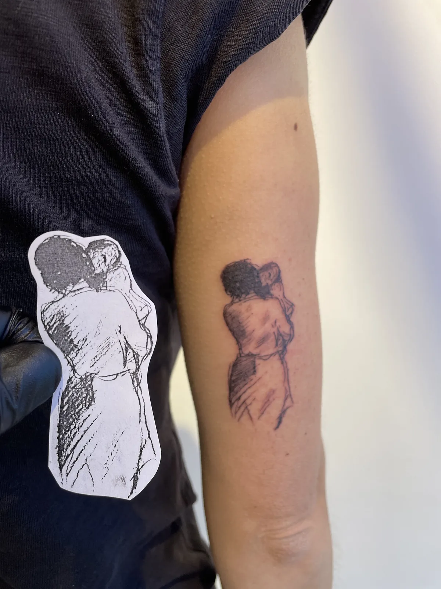

Kleine tattoos, met alle rust van de wereld
Ik ben Laura. In mijn studio aan de Brabantdam zet ik fijne, kleine tattoos. Vaak is het iemands allereerste. We tekenen je ontwerp samen, en we nemen er de tijd voor.

Fijne lijnen, elk met een verhaal
Een jaartal, een vlammetje, een tekening van twee mensen die elkaar vasthouden. Klein van formaat, maar voor wie hem draagt vaak heel groot.


Meer werk zie je op mijn Instagram. Af en toe organiseer ik ook flash events, met kant-en-klare ontwerpen. Daar laat ik je op tijd weten wanneer.

Van idee tot op je huid
Je ontwerp is van jou. Daarom tekenen we het samen, tot het voelt zoals het moet.
- 1
Vertel me je verhaal
Stuur me een bericht met je idee, een foto of een gevoel. Waar moet hij komen, hoe groot ongeveer?
tell me your story - 2
We tekenen samen
Ik maak een ontwerp en we passen het aan zo vaak als nodig, tot het helemaal goed zit.
ask me all your questions - 3
Je afspraak
In de studio is het rustig. Je krijgt de tijd om binnen te komen, we kijken samen of alles op de juiste plek staat en dan beginnen we.
relax
Een beetje zenuwachtig? Dat mag.
Heel wat mensen komen hier voor hun eerste tattoo. Ik leg alles uit voor we beginnen, en we gaan pas verder als jij er klaar voor bent.
- bring a friendNeem gerust iemand mee voor de steun.
- ask me all your questionsGeen enkele vraag is te klein.
“Met een bang hartje wandelde ik gisteren binnen bij Studio Ipanema voor mijn eerste minimalistische tattoo. Laura stelde mij meteen op mijn gemak door haar zachte stem en benadering.”Marlies V., op Google
Wat mensen over Laura zeggen
“De communicatie met Laura verliep vanaf het begin erg vlot. Ze maakte zonder problemen meerdere aanpassingen aan het ontwerp tot het 100% naar mijn zin was.”
Emely B.“Het moment dat ik bij Laura binnenkwam, voelde ik meteen de rust over mij vallen.”
robbe c.“gaat echt samen opzoek met jou voor de designs. Je voelt je zo op uw gemak.”
Anurag K.Enkel op afspraak, nooit gehaast
Ik werk zonder walk-ins, zodat elke afspraak de tijd krijgt die hij nodig heeft. Stuur me een bericht via Instagram, dan zoeken we samen een moment.
Studio Ipanema · Brabantdam 147, 9000 Gent